東京大学 2009年 理科 第5問
問題
(1) 実数xが-1<x<1,x≠0を満たすとき、次の不等式を示せ。
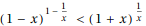
(2) 次の不等式を示せ。
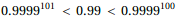
解答
(1)
不等式は両辺ともに常に正だから、辺々対数を取った不等式についてFullSimplifyで証明する。
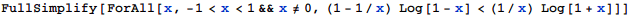

(2)
有理数として厳密に計算する。
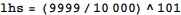
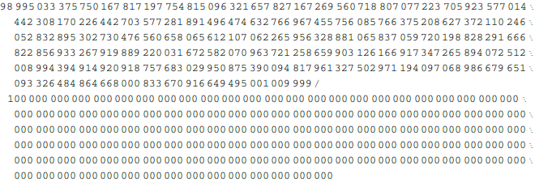
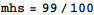
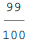
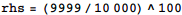
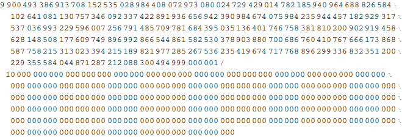
具体的な値を比較することで証明終了。
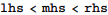
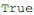
補足・感想
(2)はMathematicaは任意精度の有理数を扱えるので、直接証明できる。